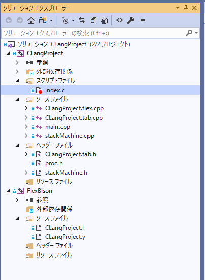

１、10をpush ２、30をpush ３、プラス演算とわかるので、30をpop ４、10の場所（スタックの先頭）に30を加算 ５、結果としてスタックの先頭は40になる
#pragma once #undef INT8_MIN #undef INT16_MIN #undef INT32_MIN #undef INT8_MAX #undef INT16_MAX #undef INT32_MAX #undef UINT8_MAX #undef UINT16_MAX #undef UINT32_MAX #include <cstdlib> #include <cstring> #include <iostream> #include <fstream> #include <string> #include <set> #include <map> #include <vector> #include <list> #include <memory> using namespace std; #include "stackMachine.h"
#pragma once
namespace clg
{
//--------------------------------------------------------------------------------------
/// ニーモニック
//--------------------------------------------------------------------------------------
enum class Mnemonic {
LDI, //INT型定数のロード
DMP, //デバッグ出力
};
//--------------------------------------------------------------------------------------
/// 値
//--------------------------------------------------------------------------------------
union Value{
int intVal;
char* pChar;
};
//--------------------------------------------------------------------------------------
/// オペコード
//--------------------------------------------------------------------------------------
struct Opecode {
Mnemonic mmnic;
Value val;
};
//--------------------------------------------------------------------------------------
/// スタックマシンクラス
//--------------------------------------------------------------------------------------
class stackMachine {
vector<Opecode> m_codes;
vector<Value> m_stack;
//命令ポインタ
unsigned int m_ip = 0;
void stackPush(Value val);
Value stackPop();
stackMachine();
public:
virtual ~stackMachine();
int compile(FILE* fp);
void exec();
void destroy();
//インスタンス参照
static stackMachine* get();
//何もしない
void createEmpty();
/// INTリテラル
void createIntLiteralExp(const char* ptr);
//デバッグ出力
void createDump();
};
}
//end namespace clg
#include "proc.h"
namespace clg
{
//唯一のスタックマシンのインスタンス
stackMachine* g_pSackMachine;
stackMachine::stackMachine()
{}
stackMachine::~stackMachine() {
}
int stackMachine::compile(FILE* fp) {
extern int yyparse(void);
extern FILE* yyin;
yyin = fp;
if (yyparse()) {
return 1;
}
return 0;
}
void stackMachine::exec() {
if (m_codes.size() <= 0) {
return;
}
while (m_ip < m_codes.size()) {
Opecode opcode = m_codes[m_ip];
switch (opcode.mmnic) {
case Mnemonic::LDI:
stackPush(opcode.val);
m_ip++;
break;
case Mnemonic::DMP:
cout << stackPop().intVal << endl;
m_ip++;
break;
}
}
}
void stackMachine::destroy() {
if (g_pSackMachine) {
delete g_pSackMachine;
g_pSackMachine = nullptr;
}
}
//インスタンス参照
stackMachine* stackMachine::get() {
if (!g_pSackMachine) {
g_pSackMachine = new stackMachine();
}
return g_pSackMachine;
}
//スタック操作
void stackMachine::stackPush(Value val) {
m_stack.push_back(val);
}
Value stackMachine::stackPop() {
if (m_stack.empty()) {
cout << "スタックは空です" << endl;
exit(1);
}
Value val = m_stack.back();
m_stack.pop_back();
return val;
}
//何もしない
void stackMachine::createEmpty(){
}
/// INTリテラル
void stackMachine::createIntLiteralExp(const char* ptr) {
Opecode code;
code.mmnic = Mnemonic::LDI;
code.val.intVal = atoi(ptr);
m_codes.push_back(code);
}
//出力
void stackMachine::createDump() {
Opecode code;
code.mmnic = Mnemonic::DMP;
m_codes.push_back(code);
}
}
//end namespace clg
%{
#include <stdio.h>
#include "CLangProject.tab.h"
#define YY_SKIP_YYWRAP 1
int gLine = 1;
int yywrap(void){ return 1; }
%}
%s COMMENT
%s LINE_COMMENT
%%
<INITIAL>{
";" return SEMICOLON;
"+" return ADD;
"-" return SUB;
"*" return MUL;
"/" return DIV;
"dump" return DMP;
"/*" { BEGIN(COMMENT);}
[/][/]+ { BEGIN(LINE_COMMENT);}
[1-9][0-9]* {
return INT_LITERAL;
}
"\n" {gLine++;}
[ \t] ;
. { return 0;}
}
<COMMENT>{
"\n" {gLine++;}
"*/" {BEGIN(INITIAL);}
. ;
}
<LINE_COMMENT>{
"\n" { gLine++; BEGIN(INITIAL);}
. ;
}
%%
%{
#include <stdio.h>
#include <stdlib.h>
#include "../CLangProject/proc.h"
#define YYDEBUG 1
extern int yylex(void);
extern char *yytext;
int yyerror(char const *str){
extern int gLine;
fprintf(stderr,"%s, line: %d, near %s\n",str, gLine, yytext);
return 0;
}
%}
%code requires {
#include "../CLangProject/proc.h"
}
%union {
const char* fixedString;
}
%token <fixedString> INT_LITERAL DMP SEMICOLON ADD SUB MUL DIV
%type intliteral_expression
%type statement statement_list
%%
statement_list
: statement
| statement_list statement
;
statement
: SEMICOLON
| intliteral_expression SEMICOLON
{
clg::stackMachine::get()->createEmpty();
}
| DMP intliteral_expression SEMICOLON
{
clg::stackMachine::get()->createDump();
}
;
intliteral_expression
: INT_LITERAL
{
clg::stackMachine::get()->createIntLiteralExp(yytext);
}
;
%%
１、コンパイル（p-code作成 ） ２、実行 ３、後始末
#include "proc.h"
class InputParser {
vector <string> m_tokens;
public:
InputParser(int& argc, char** argv) {
for (int i = 1; i < argc; ++i) {
m_tokens.push_back(string(argv[i]));
}
}
const string& getCmdOption(const string& option) const {
vector<string>::const_iterator itr;
itr = find(m_tokens.begin(), m_tokens.end(), option);
if (itr != m_tokens.end() && ++itr != m_tokens.end()) {
return *itr;
}
static const string empty_string("");
return empty_string;
}
bool cmdOptionExists(const string& option) const {
return find(m_tokens.begin(), m_tokens.end(), option)
!= m_tokens.end();
}
};
int main(int argc, char** argv) {
InputParser input(argc, argv);
const string& filename = input.getCmdOption("-f");
if (filename.empty()) {
cout << "スクリプトファイルが指定されていません。" << endl;
return 1;
}
errno_t err;
FILE* fp;
if ((err = fopen_s(&fp, filename.c_str(), "r")) != 0) {
cout << "スクリプトファイルの読み込みに失敗しました。" << endl;
return 1;
}
auto tntp = clg::stackMachine::get();
if (tntp->compile(fp)) {
return 1;
}
tntp->exec();
tntp->destroy();
return 0;
}
dump 10;

図130201
MOV EAX,30 ; EAXレジスタに30をロード MOV EDX,10 ; EDXレジスタに10をロード ADD EAX,EDX ; EAXにEDXを加算してEAXの保存
LDI 30 LDI 10 ADD
LDI 30
LDI 10
ADD
dump 10;
intliteral_expression
: INT_LITERAL
{
clg::stackMachine::get()->createIntLiteralExp(yytext);
}
;
INT_LITERALはintliteral_expression（初期化式）というタイプ（分類）に属し、 これは、clg::stackMachine::get()->createIntLiteralExp(yytext); という関数呼び出しで処理される
/// INTリテラル
void stackMachine::createIntLiteralExp(const char* ptr) {
Opecode code;
code.mmnic = Mnemonic::LDI;
code.val.intVal = atoi(ptr);
m_codes.push_back(code);
}
//--------------------------------------------------------------------------------------
/// ニーモニック
//--------------------------------------------------------------------------------------
enum class Mnemonic {
LDI, //INT型定数のロード
DMP, //デバッグ出力
};
| DMP intliteral_expression SEMICOLON
{
clg::stackMachine::get()->createDump();
}
;
dump 10;
//出力
void stackMachine::createDump() {
Opecode code;
code.mmnic = Mnemonic::DMP;
m_codes.push_back(code);
}
int stackMachine::compile(FILE* fp) {
extern int yyparse(void);
extern FILE* yyin;
yyin = fp;
if (yyparse()) {
return 1;
}
return 0;
}
void stackMachine::exec() {
if (m_codes.size() <= 0) {
return;
}
while (m_ip < m_codes.size()) {
Opecode opcode = m_codes[m_ip];
switch (opcode.mmnic) {
case Mnemonic::LDI:
stackPush(opcode.val);
m_ip++;
break;
case Mnemonic::DMP:
cout << stackPop().intVal << endl;
m_ip++;
break;
}
}
}
if (tntp->compile(fp)) {
return 1;
}
tntp->exec();
tntp->destroy();
void stackMachine::destroy() {
if (g_pSackMachine) {
delete g_pSackMachine;
g_pSackMachine = nullptr;
}
}